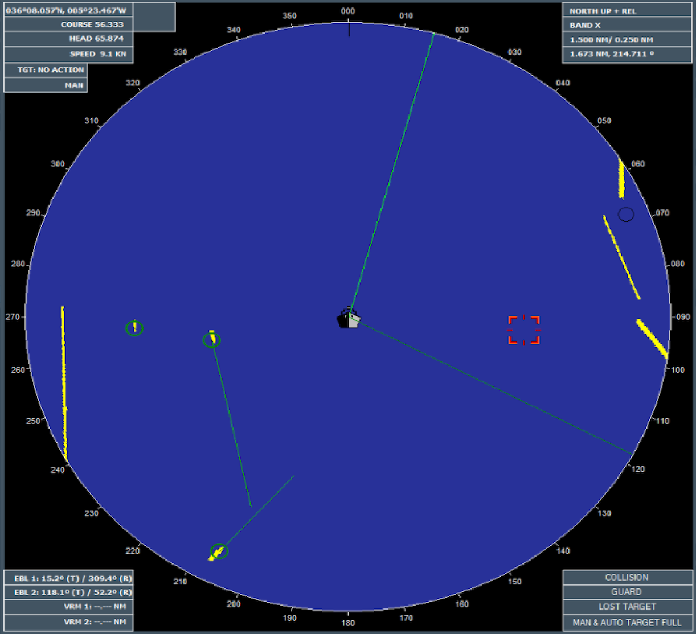

Descripción General
El SimRadar es una aplicación que proporciona simulación software de la práctica totalidad de las funciones de un radar real, con las siguientes características:
- Pantalla vídeo muy similar a un radar convencional.
- Simulación de vídeo en Bandas X y S.
- Control de ganancia (GAIN).
- Filtros (anti-clutter) de Mar y Lluvia (A/C SEA and A/C RAIN control).
- Tres modos de presentación (HEAD-UP, COURSE-UP, NORTH-UP).
- Tres modos de movimiento (TRUE, REL, CDTM).
- Simulación de Averías de Giróscopo, Corredera y GPS.
- Desplazamiento del centro (OFF CENTER).
- VRM (Variable Range Markers).
- EBL (Electronic Bering Lines).
- PIL (Parallel Index Lines).
- Cursor Paralelo (Parallel Cursor).
- Rejilla (Grid).
- Anillos de referencia (Rings).
- Marcadores de Norte y Proa (Heading).
- Vector de Buque Propio (Ownship Vector).
- Estela de ecos (Target Trails).
- Modos de visualización de Día / Noche.
El SimRadar incluye también la simulación de un módulo ARPA (Automatic Radar Plotting Aid) con las siguientes características:
- Adquisición automática de hasta 50 contactos.
- Adquisición manual de hasta 50 contactos.
- Dos zonas de adquisición automática y vigilancia.
- Información simultánea de hasta 8 contactos.
- Control de CPA y TCPA.
- Alarmas sobre contactos.
- Modo predictivo (TRIAL).
- Puntos de Historia.
El aspecto general del SimRadar, es el que presenta la siguiente captura de pantalla:

Funciones RADAR
Encendido / Apagado
El encendido del SimRadar se realiza pulsando el botón POWER ON/OFF. Tras pulsarlo se mostrará en la pantalla de vídeo radar la rosa de los vientos con la el texto TURNING ON en el centro durante aproximadamente 15 segundos. Tras este tiempo, se mostrará una cuenta atrás de 3 minutos. Transcurrida esta cuenta atrás, el estado del radar pasará a STAND BY y será posible activar la transmisión de pulsos radar. Estos tiempos simulan los habituales de encendido de un radar real.
Nota: la simulación de estos tiempos de encendido y alistamiento puede cancelarse haciendo click sobre la pantalla de video radar.
Una vez que el radar se encuentra en el modo STAND BY, se podrá activar la transmisión del pulsos pulsando el botón STBY/TX. A partir de este instante el radar estará transmitiendo (inicialmente en banda X) y por tanto se presentará el vídeo radar simulado. Pulsando de nuevo este botón, en cualquier momento, el radar volverá al modo STAND BY.
Para apagar el radar se debe pulsar de nuevo en el botón POWER ON/OFF.
Selección de Banda (X/S)
Los radares marinos pueden trabajar en dos frecuencias (bandas) distintas conocidas como X-band y S-band. Debido a la diferencias de frecuencia, la banda X, de mayor frecuencia (10 GHz) proporciona mayor resolución aunque más atenuación, mientras que la banda S, de menor frecuencia (3 GHz) proporciona menor resolución pero se ve menos afectada por las condiciones climatológicas (niebla, lluvia, ...) y tiene menos atenuación.
El SimRadar permite la simulación de ambas bandas X y S. Para conmutar entre una banda y otra se debe pulsar el botón BAND X/S.
Ajuste del Vídeo Radar
El SimRadar permite el control de ganancia (sensibilidad) de la señal radar. Para aumentar la ganancia se debe desplazar el control GAIN a la derecha y para disminuirla a la izquierda. Al hacer este ajuste se observará que se modifica la intensidad y nivel de ruido del el video radar. Normalmente se deberá seleccionar el nivel adecuado para permitir la detección de contactos según las condiciones meteorológicas.
El SimRadar también permite el control de filtros ANTI-CLUTTER de mar y lluvia. Estos filtros pueden ajustarse mediante los controles A/C SEA y A/C RAIN. Tambien dispone de un modo automático de selección de estos filtros según las condiciones meteorológicas que puede activarse y desactivarse pulsando en botón A/C AUTO.
Cambios de Escala
El SimRadar permite seleccionar el alcance (RANGE) de presentación del video radar. Para aumentar el alcance, el alumno pulsará el botón RANGE +, y para reducirlo el botón RANGE -.
El alcance varía en once niveles, que se corresponden con las siguientes distancias medidas en millas náuticas:
0.125 – 0.25 – 0.5 – 0.75 – 1.5 – 3 – 6 –12 – 24 – 48 – 96
Modos de Presentación
El SimRadar dispone de los siguientes modos de presentación del vídeo radar: HEAD-UP, COURSE-UP y NORTH-UP.
- HEAD-UP: proa arriba, modo no estabilizado, solo disponible en modo de movimiento Relativo.
- COURSE-UP: rumbo arriba, disponible en modo Relativo o Absoluto.
- NORTH-UP: norte arriba, disponible en modo Relativo o Absoluto.
Para conmutar cíclicamente entre estos modos (HEAD-UP > COURSE-UP > NORTH-UP) se debe pulsar el botón MODE, que tendrá un comportamiento diferente dependiendo del modo de movimiento seleccionado:
- Modo Relativo: Cambia entre HEAD-UP, COURSE-UP y NORTH-UP.
- Modo Absoluto: Cambia entre COURSE-UP y NORTH-UP.
Cuando el modo COURSE-UP es establecido, el azimuth queda fijo, actualizándose con el rumbo la próxima vez que entremos en dicho modo. También se puede actualizar el azimuth manualmente pulsando el botón C-UP RESET.
Cuando se establece la opción TRUE MOTION, nuestra embarcación y los demás objetos móviles se moverán en concordancia con su velocidad y rumbo real, mientras que la tierra permanecerá quieta. Cuando nuestra embarcación alcance el punto correspondiente al 75% del radio de la pantalla, será automáticamente situado en el punto opuesto al 75% del radio que pasa por el centro hasta la marca de proa. Este evento vendrá precedido de un indicador sonoro. También puede situarse manualmente en dicho punto pulsando el botón TM RESET.
Modos de Movimiento
El SimRadar dispone de los siguientes modos de movimiento: TRUE, REL y CDTM.
- TRUE: Modo de movimiento absoluto, en el que la tierra permanece fija y todos los móviles, incluido el buque propio, se mueven respecto a ella.
- REL: Modo de movimiento relativo, en el que el buque propio permanece fijo en el centro de la pantalla y el resto de los elementos, incluida la tierra, se mueve respecto a él.
- CDTM: Variante del modo de movimiento relativo con vectores absolutos (Central Display True Motion). Este modo es igual al REL, pero los contactos se representan con su vector de velocidad absoluto.
Cuando se establece la opción de movimiento TRUE, nuestra embarcación y los demás objetos móviles se mueven en concordancia con su velocidad y rumbo real, mientras que la tierra permanece quieta. Cuando nuestra embarcación alcance el punto correspondiente al 75% del radio de la pantalla, será automáticamente situado en el punto opuesto al 75% del radio que pasa por el centro hasta la marca de proa. Este evento vendrá precedido de un indicador sonoro. También puede situarse manualmente en dicho punto pulsando el botón TM RESET.
Para conmutar cíclicamente entre los modos TRUE y REL se debe pulsar el botón TM/RM. Este cambio solo tendrá efecto en los modos de presentación COURSE-UP y NORTH-UP. En caso de tener seleccionado el modo HEAD-UP solo se permite el modo de movimiento REL, y en el caso de intentar cambiar de modo de movimiento a TRUE se muestra un mensaje de error indicando que esta selección no está permitida.
Para seleccionar el modo CDTM se debe pulsar el botón CDTM. Esta opción solo está disponible en modo de presentación NORTH-UP y siempre que esté seleccionado el modo de movimiento REL. En cualquier otro caso el CDTM no se activa y se muestra un mensaje de error indicando que esta selección no está permitida.
Averías de Equipos integrados
El SimRadar admite la simulación de averías de los equipos normalmente integrados con el radar, como son el GPS, Giróscopo y Corredera. En caso de que esté averiada la Corredera, no se dispondrá del modo TRUE MOTION. Si está averiado el Giróscopo, sólo se dispondrá de modo HEAD-UP en movimiento RELATIVO.
Información General
En la esquina superior derecha de la pantalla de video radar, se presenta un resumen de información relevante acerca del estado y operación del radar:
- Estado del radar: OFF / STAND BY / Banda X/S seleccionada.
- Modos de Presentación y Movimiento seleccionados.
- Escala seleccionada: alcance / distancia entre anillos de referencia.
- Datos (range y bearing) del cursor.
Nota: para distinguir claramente cuando el radar está transmitiendo o no, el fondo del estado del radar se mantiene en gris cuando está en OF, pero pasa a amarillo en STAND BY y a verde cuando están transmitiendo en cualquiera de las bandas.
Información del Buque
En la esquina superior izquierda de la pantalla de video radar, se presenta un resumen de información relevante acerca del buque propio:
- Datos (posición absoluta) del GPS.
- Datos de nuestra embarcación: COURSE, HEAD y SPEED.
Anillos de referencia (Rings)
Esta función permite mostrar en la pantalla de video radar una serie de anillos de referencia (círculos concéntricos), con su centro siempre situado en nuestro buque, y con un radio y distancia (gráficos, no geográfica) entre ellos siempre fijo. De este modo, estos anillos sirven de referencia para la estimación visual de distancias a nuestra embarcación. La distancia entre estos anillos dependerá del alcance (RANGE) seleccionado, y se muestra en el área de información general.
Para activar o desactivar la presentación de estos anillos de referencia hay que pulsar el botón RINGS. Por defecto, el SimRadar se inicia con esta opción activada.
Rejilla (Grid)
Esta función permite la presentación en la pantalla de vídeo radar de una rejilla (Grid) de Latitud/Longitud, a una distancia entre ellas dependiente de la escala, de forma que se presenten siempre 3 o 4 líneas en Latitud y en Longitud.
Estas líneas rotan con el Norte, y no son centradas en la unidad, sino a intervalos fijos de Lat y Lon, según la escala, como sigue (escala - distancia):
- 0.125 – 0,1 NM
- 0.25 – 0,2NM
- 0.5 – 0,4 NM
- 0.75 – 0,6 NM
- 1.5 – 1 NM
- 3 – 2 NM
- 6 – 4 NM
- 12 – 8NM
- 24 – 16 NM
- 48 – 32 NM
- 96 – 64 NM
Cada línea del grid lleva una etiqueta sobre la misma y cercana a borde de la pantalla de vídeo radar indicando la Latitud o Longitud a la que corresponde.
Para activar o desactivar la presentación de esta rejilla (GRID) se debe pulsar el botón GRID.
Desplazamiento del Centro
La posición de nuestro buque puede ser desplazada desde el centro para expandir el campo visual sin tener que cambiar a una escala de mayor alcance. Podremos situar nuestro buque en cualquier parte de la pantalla, pero no más allá del 75% del alcance (RANGE) actual. Si lo intentamos, el radar lo situará automáticamente en dicho límite. Para la escala más grande no se permite esta operación, ni tampoco si el modo de movimiento es TRUE. No obstante, si el centro ya se encuentra desplazado con modo de movimiento REL, sí es posible pasar al modo de movimiento TRUE; manteniendo dicho desplazamiento. El número de anillos de referencia aumentará manteniendo el intervalo entre ellos.
Para realizar un desplazamiento del centro de presentación se debe pulsar el botón OFF CENTER y seguidamente hacer click en la posición a la que queremos desplazar nuestra embarcación. Para desactivar este desplazamiento, se deberá pulsar el botón OC RESET.
VRM (Variable Range Markers)
Esta función permite mostrar dos anillos de distancia (VRM 1 y 2) concéntricos a una distancia geográfica fija. Se dibujan de color amarillo (VRM 1) y blanco (VRM 2) para distinguirlos de los anillos de referencia, normalmente verdes. Estos anillos son una utilidad para medir distancias geográficas. El radio real de cada uno y por tanto la distancia geográfica entre los ellos se mantiene aunque se cambie el alcance de la presentación de video radar (RANGE).
Para establecer el radio de un anillo se debe seleccionar el anillo VRM 1 o VRM 2, pulsar el botón SET asociado, y hacer click en la imagen radar en una posición con el radio deseado. Para activar o desactivar la presentación de cada anillo, se debe pulsar el botón SHOW / HIDE correspondiente.
Cuando se ha ha activado la presentación de uno o dos anillos VRM, se muestran sus radios en la parte inferior izquierda de la pantalla de vídeo radar.
EBL (Electronic Bearing Lines)
Esta función permite mostrar dos líneas de marcación (EBL 1 y EBL 2) con centro en nuestro buque o en un punto seleccionado, y hasta el círculo más externo de la pantalla de vídeo radar. Estas líneas son una utilidad para medir marcaciones. La orientación absoluta de estas líneas, así como su origen relativo a la posición del buque propio se mantiene independientemente del modo de presentación seleccionado.
Para configurar una de estas líneas con centro en nuestro buque, se debe seleccionar EBL 1 o EBL 2, pulsar el botón CENT asociado, y hacer click en una posición con la marcación deseada.
Para configurar una de estas líneas con centro en otro punto, se debe seleccionar EBL 1 o EBL 2, pulsar el botón CURS asociado, hacer click en la posición en la que queremos el origen de la línea y volver a hacer click en una posición con la marcación deseada.
Para activar o desactivar la presentación de estas líneas, se debe pulsar el botón SHOW / HIDE correspondiente.
Cuando se ha ha activado la presentación de una o dos EBL, se muestran sus marcaciones (bearing) en la parte inferior izquierda de la pantalla de vídeo radar. Este dato finaliza con una R si es relativo a la dirección de la proa del buque propio, o una T si el dato es relativo al norte.
Las EBLs muestran una pequeña línea perpendicular, indicando la intersección de éstas con los anillos VRMs, estén o no éstos visibles. Asimismo, se muestra la distancia de estas marcas al centro en la parte inferior derecha de la pantalla de vídeo radar.
En caso de que el rumbo recibido por el equipo no sea válido (avería de Giróscopo y GPS), la presentación pasará automáticamente a HEAD-UP en movimiento Relativo y las EBL no se mostrarán.

Cursor Paralelo (Parallel Cursor)
Esta función permite la presentación en pantalla de un cursor paralelo rotativo centrado en nuestro buque. La presentación gráfica del cursor paralelo consiste en dos líneas ortogonales (ejes) que se extienden hasta al borde del círculo de video y que se cruzan en el buque. Los extremos de las dos líneas ortogonales terminan con una marca semicircular. A ambos lados de nuestro buque (FULL MODE) o solo en uno de los lados (HALF MODE), se mostrarán una serie de líneas paralelas equidistantes. La distancia entre estas líneas paralelas es la misma que la de separación entre los anillos de referencia en la escala (RANGE) seleccionada.
El cursor paralelo está disponible en todos los modos de presentación y para cualquier escala seleccionada.
Para configurar la presentación del Cursor Paralelo se debe introducir el valor de rumbo (Bearing) deseado y pulsar el botón SET. La primera vez que el cursor paralelo es mostrado, uno de sus ejes será paralelo al rumbo del buque y el modo de presentación será completo (FULL MODE). Para cambiar entre modo completo (FULL MODE) y medio (HALF MODE), se debe pulsar el botón FULL/HALF asociado. Se puede seleccionar también entre modo de presentación Absoluto (TRUE) o Relativo (REL) pulsando el botón REL/TRUE correspondiente. Cuando se seleccione Absoluto (TRUE) el cursor paralelo estará estabilizado en azimut, mantiendo una orientación constante con respecto al norte. Si se selecciona Relativo (REL) el cursor paralelo será no estabilizado, mantienendo una orientación constante con respecto al rumbo del buque. Si estando seleccionado el modo Absoluto el rumbo recibido por el radar no es válido (avería de Giróscopo y GPS), el Cursor Paralelo no aparecerá en pantalla.
Para girar el Cursor Paralelo se debe modificar el valor de rumbo que aparece en el campo Bearing correspondiente, y volver a pulsar el botón SET. Para realinear el Cursor Paralelo con el rumbo del buque, se debe pulsar el botón RESET (Reset to Ship Heading).
Para activar o desactivar la presentación del Cursor Paralelo se debe pulsar el botón SHOW / HIDE correspondiente.
PIL (Parallel Index Lines)
Esta función permite presentar de forma simultánea hasta 5 líneas paralelas indexadas (PI Lines), que cubren todo el círculo de video independientemente de la escala de alcance en uso. Estas líneas estarán disponibles en todos los modos de presentación y movimiento y cada una de ellas estará definida por la distancia de su punto más próximo al buque propio, su rumbo absoluto, el tipo de línea y en qué lado del buque está.
Estos conjuntos de hasta 5 líneas paralelas indexadas, pueden editarse y guardarse para poder seleccionarlos posteriormente para su presentación. El sistema admite guardar hasta 15 conjuntos de PI Lines.
Para activar lo desactivar la presentación de un conjunto de PI Lines guardado, se debe seleccionar el mismo en el campo Selected Set, y pulsar el botón SHOW / HIDE.
Para la creación o edición de un conjunto de PI Lines, se debe pulsar el boton NEW (creación) o seleccionar un conjunto y pulsar EDIT/SAVE (edición). Una vez hecho esto, se presentará la información de las hasta 5 líneas que componen el conjunto que se está editando, o aparecen en blanco si se trata de la creación de uno nuevo. Pulsando sobre los datos de una de las líneas del conjunto, se podrán modificar o introducir sus datos (estilo, grosor, orientación, distancia al nuestro buque, y a qué lado del buque se presenta) en los campos indicados con la etiqueta Setected Line. Pulsando ACEPT o DISCARD, guardaremos o descartaremos los cambios introducidos. Una vez realizados todos los cambios deseados en las líneas, los guardamos pulsando de nuevo el botón EDIT/SAVE También podemos borrar un conjunto seleccionándolo y pulsando el botón DELETE.
En caso de que el rumbo recibido por el equipo no sea válido (avería de Giróscopo y GPS), la presentación pasará automáticamente a HEAD-UP en movimiento Relativo y las líneas paralelas no se mostrarán.
Marcadores de Norte y Proa
El SimRadar dispone de los siguientes marcadores sobre la pantalla de vídeo radar:
North Marker (Marcador de Norte): este marcador nos señala en todo momento la situación del norte magnético y se representa con una pequeña línea situada en el anillo más exterior.
Heading Line (Línea de proa): es una línea que parte desde nuestro buque y termina en el anillo más exterior e indica la dirección de proa de nuestro buque. Podemos activar o desactivar su presentación pulsando el botón HEADING.
Heading Marker (Marcador de proa): marcador en forma de círculo sobre el anillo más exterior, que nos indica el ángulo al que está orientado nuestro buque.
Vector de Buque Propio
El símbolo del vector del buque propio indica su velocidad y rumbo, y se muestra como un vector con origen en nuestro buque, y su longitud es función de la distancia recorrida por el buque a la velocidad actual, dentro del circulo de video, en el tiempo introducido por el operador en el campo Beam Line. Este vector puede alcanzar el anillo más exterior, en cuyo caso se muestra un semicírculo 4 mm de radio con centro en el punto en el que el vector intercepta el extremo del círculo de video.
Para activar o desactivar la presentación del vector del buque propio, se debe pulsar el botón SHOW / HIDE correspondiente. Para modificar el valor de tiempo considerado para el cálculo de la longitud del vector, se debe introducir el valor deseado en el campo Beam Line y pulsar el botón SET.
Las marcas del vector se presentan a lo largo del vector del buque propio a intervalos de 1 minuto con una marca de doble trazo cada 6 minutos (tiempos por defecto, que pueden ser modificados por configuración). Para activar o desactivar la presentación de estas marcas, pulsar el botón TICKS.
Estela de ecos (Trails)
Esta función permite presentar en la pantalla de vídeo radar la estela producida por los ecos mientras éstos cambian de posición. Cuando está activa, se muestran en pantalla los ecos actuales y, con color azul, los ecos recogidos durante los últimos 5 minutos. Cada vez que hay un cambio de modo de presentación, se borran todas las estelas y comienza a contar el tiempo desde cero.
Para activar o desactivar esta función se debe pulsar el botón TRAILS.
Presentación Día / Noche
La función de modos de Día y Noche permite seleccionar la configuración correcta del colores de la pantalla, para ofrecer la presentación óptima bajo diversas condiciones de luminosidad. El SimRadar dispone de las siguientes configuraciones de color seleccionables:
- DAY BRIGHT
- DUSK
- NIGHT
Funciones ARPA
El SimRadar incluye funciones ARPA (Automatic Radar Plotting Aid), que se describen en los siguientes apartados.
Simbología ARPA
En el proceso de adquisición, el símbolo del contacto va cambiando según la siguiente secuencia: Adquiriendo contacto -> Contacto adquirido -> Contacto adquirido estable.
Adquiriendo contacto
El cuadrado “partido” (broken square) alrededor de un eco señala un contacto bajo adquisición y en estado inicial de captura, antes de entrar en el estado de capturado. Este símbolo tiene un grosor diferente si la adquisición se realiza manualmente (normal) o automáticamente (grueso).
Contacto adquirido
Entre 20 y 60 rastreos de antena después de la adquisición inicial del contacto (vector aún de poca confianza).
Contacto adquirido estable
El círculo sólido con vector indica estado de seguimiento estable (60 rastreos de antena después de la adquisición).
Además, existen otros trés símbolos que se presentan superpuestos a los anteriores para indicar alguna condición específica en el mismo: Alarma CPA, contacto perdido o contacto con datos.
Contacto adquirido / alarma CPA
La Alarma CPA no tiene un símbolo específico, pero cambia el color del símbolo del contacto a rojo, al mismo tiempo que se ilumina el rótulo de alarma CPA en la parte inferior derecha de la pantalla y suena la alarma sonora.
Contacto perdido
Este símbolo, un aspa superpuesta al símbolo del contacto, en color rojo, nos señala un contacto perdido.
Contacto adquirido con datos
Este símbolo aparece superpuesto al del contacto cuando se están presentando los datos del mismo (distancia, demora, rumbo, velocidad, CPA y TCPA) en la lista de tracks. El número (1 a 8) corresponde a la posición del track en dicha lista.
Por defecto, la visualización de los contactos ARPA está activa. Para activar o desactivar la visualización de los contactos ARPA se debe pulsar el botón ARPA VIS. Aún estando desactivado la visualización de contactos, las funciones ARPA de adquisición siguen estando activas, pudiendose generar alarmas, etc...
Por defecto, la visualización de las trazas son coherentes con el modo de visualización del radar. Es decir, si estamos en cualquier modo relativo, las trazas se representan en modo relativo y si estamos en un modo absoluto, las trazas se representan en modo absoluto. Para forzar una visualización no coherente (modo híbrido o CDTM), se debe pulsar el botón CDTM.
Adquisición de contactos
La función ARPA tiene capacidad para adquirir hasta 40 contactos, 50 automáticos y 50 manuales. El proceso de adquisición de un contacto de forma general es el siguiente:
- El usuario adquiere un contacto, de forma manual o automática.
- El contacto, recién adquirido, aparece como un cuadrado “partido” (broken square).
- En los 20 siguientes rastreos de antena se mostrará un vector indicando la dirección y la velocidad (si la adquisición es correcta).
- En los 60 siguientes rastreos de antena, se termina la fase inicial de seguimiento y el contacto se convierte en un contacto de seguimiento estable. El cuadrado “partido” (broken square) pasa en este caso a ser un círculo sólido.
Para poder activar la adquisición automática de contactos se deben definir previamente las zonas de adquisición automática o vigilancia (dos disponibles), dentro de las cuales será aplicada (ver apartado correspondiente).
Para activar o desactivar la función de adquisición automática de contactos se debe pulsar el botón AUTO ACQ. Una vez activada, la función ARPA intentará adquirir contactos automáticamente a partir de los ecos detectados dentro de las zonas de adquisición automática definidas. El modo de adquisición de contactos manual siempre está disponible. El modo de adquisición activado en cada momento se muestra en la parte inferior derecha de la pantalla de vídeo radar, donde se indica AUTO+ MAN cuando el modo automático está activado, y MAN cuando está desactivado.
Los contactos manuales se distinguen de los automáticos por el grosor de los símbolos, más gruesos en este primer caso.
Si en modo automático se han adquirido 50 contactos se muestra el mensaje AUTO TARGET FULL.
Para adquirir una contacto manualmente, pulsar el botón ACQ y situar el cursor sobre el eco. El proceso de seguimiento es igual que el automático.
Al adquirir 50 contactos manualmente, se mostrará el mensaje MAN TARGET FULL en pantalla.
Para cancelar la adquisición manual o automática y eliminar un contacto concreto se debe pulsar el botón TGT CANCEL y hacer un click sobre el contacto. Para cancelar y eliminar todos los contactos pulsar el botón TRGT CLR ALL.
Zonas de vigilancia (Guard Zones)
El SimRadar permite definir dos áreas independientes y simultáneas de adquisición automática y vigilancia (Guard Zones). Para definir estas zonas se debe seleccionar el área (1 o 2) que queremos definir, pulsar el botón SET, y en la pantalla de vídeo radar, y hacer click consecutivamente en los puntos A y B que definirán el área tal como se muestra en el siguiente gráfico:
Cuando se adquiere un nuevo contacto en una de estas zonas, se produce una alarma, que se indica cambiando el color del símbolo del contacto adquirido a rojo, al mismo tiempo que se ilumina en rojo el rótulo de GUARD en la parte inferior derecha de la pantalla y suena una alarma sonora. El contacto que provoca la alarma queda por tanto identificado claramente con un cuadrado “partido” (broken square) en rojo. Para reconocer esta alarma se debe pulsar el rótulo GUARD con lo que dejará de estar iluminado, se detendrá la alarma sonora y el contacto pasará a representarte con la simbología y color correspondiente a su estado de adquisición.
Para desactivar las zonas de vigilancia, se debe seleccionar la zona (1 o 2) y pulsar el botón OFF.
Para mostrar u ocultar estas zonas en la plantalla de video radar se debe seleccionar la zona (1 o 2) y pulsar el botón SHOW / HIDE.
Información de contactos
Esta función permite mostrar información simultáneamente de hasta ocho contactos adquiridos. Para ello, se debe poner el Hook sobre el contacto del que se quieren mostrar sus datos, seleccionar un número del 1 al 8 en el desplegable, y pulsar el botón TGT DATA NUM. De este modo, se mostrará la información del contacto seleccionado, en el espacio correspondiente (del 1 al 8) del área TGT DATA. Adicionalmente, se mostrará un cuadro alrededor del contacto, y el número asignado (1 al 8).
La información mostrada es la siguiente:
- R(Range): distancia nuestro buque / B(Bearing): demora relativa al Norte
- C(Course): rumbo relativo al Norte / S(Speed): velocidad absoluta
- CPA(Closest Point of Approach): distancia / demora del CPA del contacto
- TCPA: tiempo restante al CPA
Control del CPA
Esta función chequea continuamente el CPA y el TCPA de cada contacto al propio barco. Si el CPA calculado para un contacto es menor que el parámetro CPA, y el tiempo calculado a dicho CPA es menor que establecido en el parámetro TCPA, se dispara una alarma, emitiendo sonido e iluminando en rojo el rótulo el mensaje COLLISION en la parte inferior derecha de pantalla de vídeo radar. Además, el símbolo del contacto que causa la alarma cambia a color rojo
Para activar esta alarma debe introducirse en alguno de los dos campos CPA, TCPA, un valor distinto de cero. En función de los valores introducidos, el comportamiento es el siguiente:
- PA = 0, TCPA = 0 => Alerta desactivada
- CPA = valor, TCPA = 0 => Alerta cuando CPA sea menor que el valor, para cualquier TCPA.
- CPA = 0, TCPA = valor => Alerta solo cuando haya colisión en un tiempo < valor del TCPA.
- CPA = valor, TCPA = valor => Alerta normal por CPA, TCPA.
Para validar los valores introducidos debe pulsarse el botón SET. Para reconocer y silenciar esta alarma se debe pulsar el rótulo COLLISION en el área de alarmas (zona inferior derecha de la pantalla). En este caso al reconocer la alarma, cesa el aviso sonoro, pero el mensaje COLLISION y el símbolo del contacto que causa la alarma permanecerán en rojo mientras se mantenga la situación de peligro (colisión), o se cancele manualmente el seguimiento del contacto, presionando el botón TGT CANCEL.
Historia de contactos
Esta función permite mostrar puntos de historia de contactos, que facilitan hacer seguimiento de la trayectoria seguida por los contactos. El historial se conserva durante 8 minutos, y se muestran 5 puntos blancos circulares unidos por una línea blanca con un intervalo de 2 minutos entre ellos.
Para activar o desactivar la presentación de puntos de historia de contactos, pulsar el botón HISTORIC.
Modo predictivo (Trial Mode)
Esta función permite disponer de un modo predictivo (Trial Mode), que calcula la posición futura de todos los contactos y del buque propio para un tiempo determinado y para un rumbo y velocidad dados para el buque propio.
En el modo de movimiento relativo, la posición futura de calcula solo para los contactos (ya que la posición futura del buque propio seguirá siendo el centro de la pantalla), y para calcularlas se tendrá en cuenta el rumbo y velocidad actuales de cada uno de ellos y el rumbo y velocidad dados para el buque propio.
En movimiento absoluto, el modo TRIAL calcula las posiciones futuras del buque propio (con los valores de rumbo, velocidad y tiempo del TRIAL) y de todos los contactos (con su valor real de rumbo y velocidad y el tiempo introducido en los datos del TRIAL).
Para activar o desactivar este modo se debe pulsar el botón TRIAL. Los campos Course y Speed indican el rumbo y velocidad supuestos para el buque propio, y el campo Time indica el tiempo al que se realiza la extrapolación.
Cuando este modo está activo, se muestra una “T” grande aparece en la pantalla de vídeo radar, en la esquina superior izquierda. Las posiciones aparecen en la pantalla como un cuadrado pequeño de color rojo, unido a las posiciones actuales de los contactos por una línea, también de color rojo, tal como se ilustra en la siguiente imagen:

Alarmas ARPA
En este apartado se resumen las alarmas gestionadas por el módulo ARPA. Todos los mensajes de alarma se presentan en la zona inferior derecha de la pantalla, iluminándose en color rojo cuando están activas. La siguente tabla contiene toda la información relativa a estas alarmas y a la forma de reconocerlas (acknowledge) y cancelarlas:
---